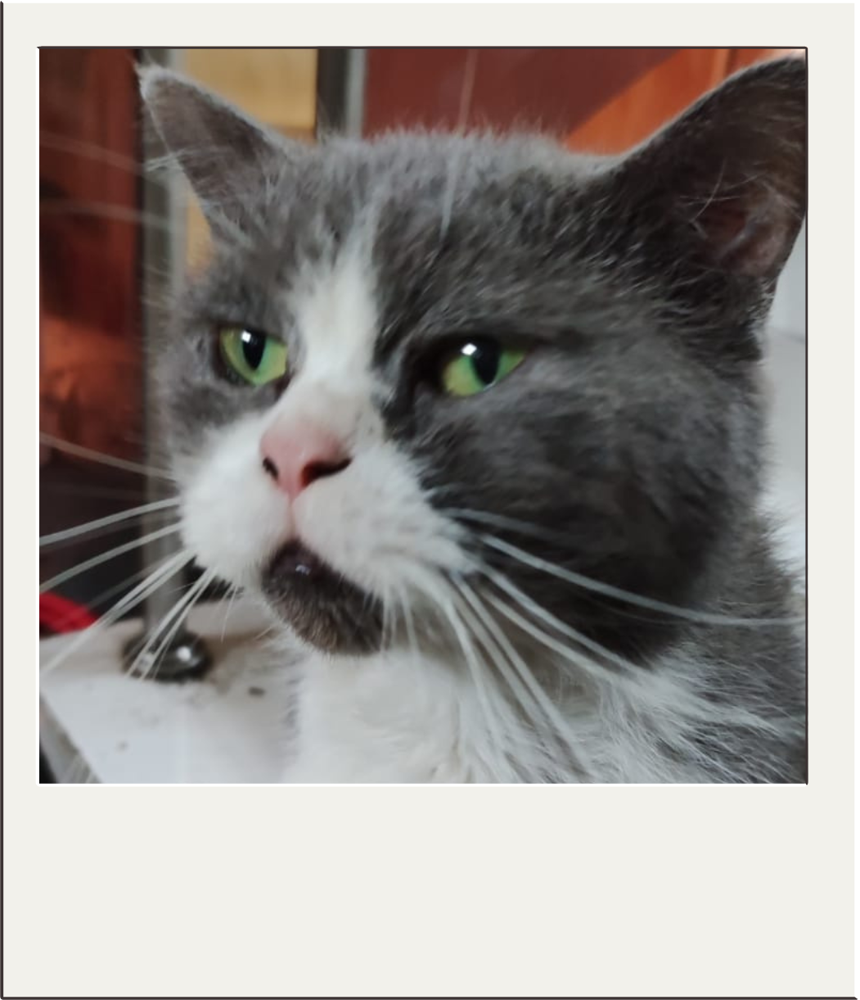
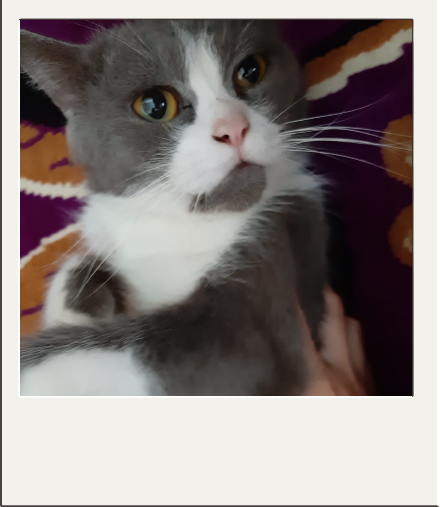
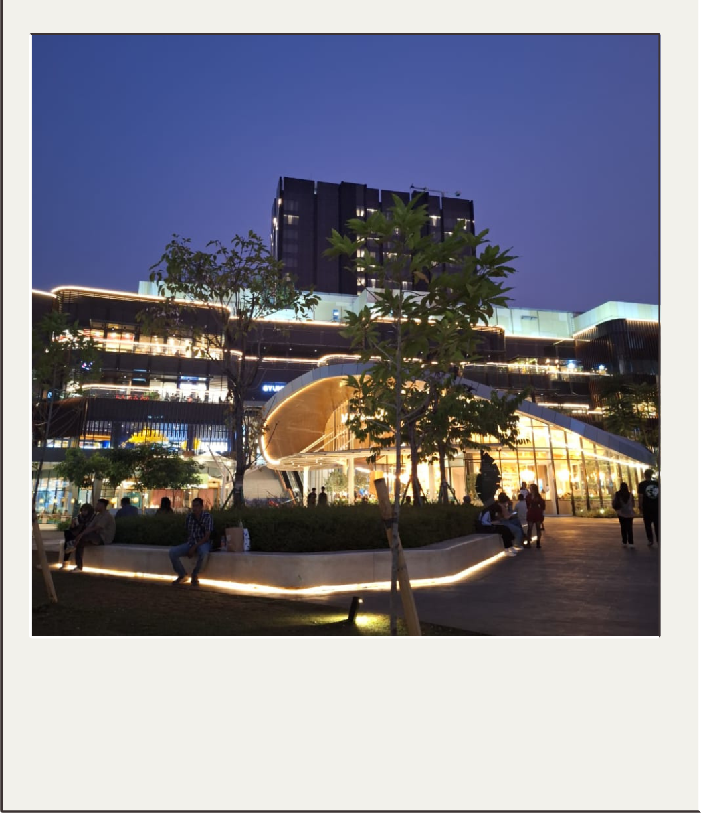
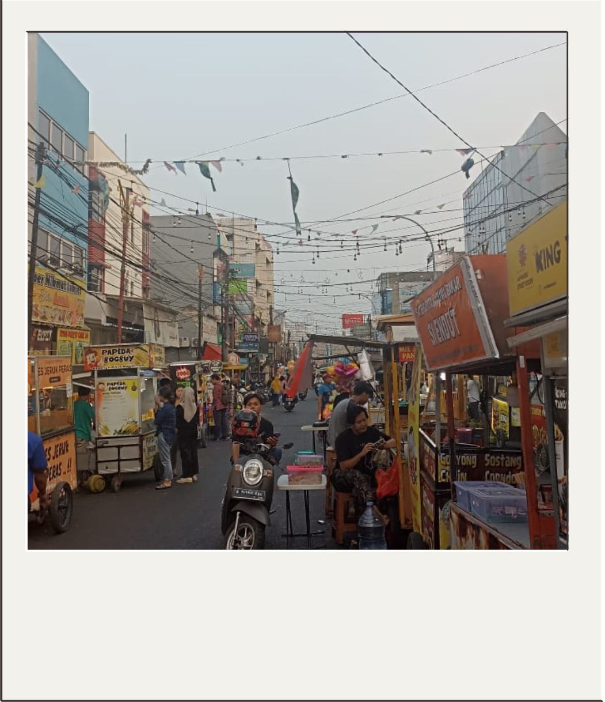
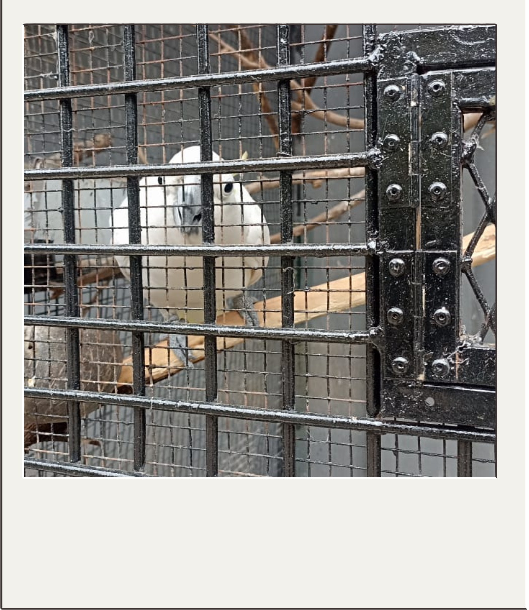

15/07/2024, Seekor kucing British Short Hair Campuran bernama Wowong, Sukanya tidur ditangga rumah kalau ga dirak mama sampe kadang mama marah karena wowong ngeberantakkin isi raknya buat dia tempat tidur

19/06/2012, Seekor kucing British Short Hair Campuran bernama Wowong, Matanya warna oren, hidungnya warna pink, suka banget makan makanan basah dan wowong senang sekali untuk nyakar sofa.

23/08/2024, Sebuah pemandangan saat senja, bertepatan di Bintaro Exchange, Bintaro. Langit begitu indah, warnanya biru keunguan. Dengan sejuknya angin disore hari, bersama teman terbaik.

10/07/2024, "Ditempat pertama aku bertemu dengannya", Tempat yang dahulu hanyalah sebuah kuliner makanan kecil hingga sekarang menjadi pusat jajanan sore hari, dibarengi senja (dan dirinya).

07/07/2024, Peliharaan tetangga yang sering kuliat saat sore hari. Kaka tua itu sangatlah lucu, dan dia selalu menghampiri ku disaat aku mengunjunginya. I wish i know this name of cutest parrot.